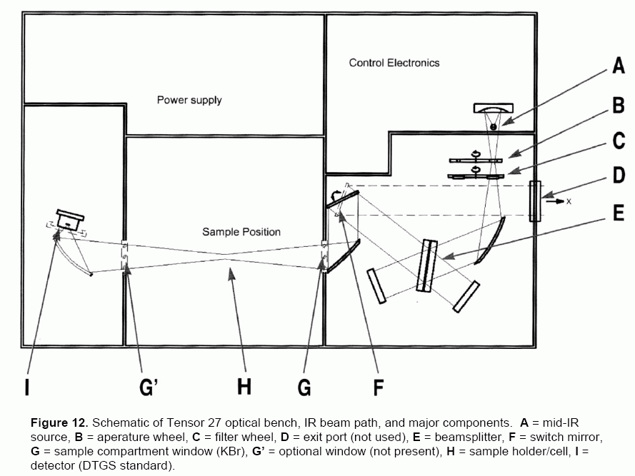

Features of the Infrared Spectrum
The electromagnetic spectrum is shown in the table below.
| Radio waves
| 10−9-10−7
| 10−5-10−3
| 101-103
|
| Short waves
| 10−7-10−4
| 10−3-10−1
| 10−1-101
|
| Micro waves
| 10−4-10−3
| 10−1-101
| 10−3-10−1
|
| Infrared Light
| 10−3-100
| 101-104
| 10−6-10−3
|
| Visible Light
| 100
| 104
| 10−6
|
| Ultraviolet Light
| 100-102
| 104-106
| 10−8-10−6
|
| X-Rays
| 102-105
| 106-109
| 10−11-10−8
|
| Gamma Rays
| 105-107
| 109-1011
| 10−13-10−11
|
Infrared radiation reports and stimulates bond vibrations, both symmetric
and asymmetric stretching, as well as bending.
The hexane spectrum is a good example. Strong absorptions are observed
in the 3000-2500 cm−1 corresponding to C-H bands. The
region from 1700-700 cm−1 is the fingerprint region.
The following bonds, vibration types, and spectrum regions are in the table
below:
| Bond/Function | Vibration type | Spectrum region
(cm−1)
|
|---|
| Amide I: C=O | symmetric stretch: νs | 1700-1600
|
| Amide II: N-H, C=O | δ (N-H)
νas (C=O)
| 1600-1500
|
| primary amine protons, methylene
| asymmetric stretch: νas (NH3+)
δ (CH2)
| 1500-1420
|
| COO− | νs | 1420-1380
|
| Amide III: C-N, N-H | νs (C-N)
δ (N-H)
| 1350-1300
|
The amide I bond is quite sensitive to conformation.
A protein that is largely random coil will have a very broad peak from 1700-1600
cm−1, often centered at 1645 cm−1.
A protein composed of α-helix will show a sharper (narrower width) peak
centered at 1652 cm−1. Hemoglobin has a somewhat distinguished
single peak at 1654 cm−1 although 2nd derivative spectrum shows
the peak has multiple components.
A protein made of pure β-sheet should show two peaks, a smaller one
centered at 1680 cm−1 and a larger one centered at
1630 cm−1. Concanavalin A shows a largely β-sheet structure
with peaks 1694 and 1635 cm−1, the latter very large.
The YadA membrane anchor protein shows three distinctive peaks (1696,
1653, and 1632 cm−1) which shows a clear mix of helix and sheet.
Pepsino is another example of a mixture, with 2nd derivative spectrum showing
a clear feature at 1694, 1654, and 1635 cm−1.
In one study looking for changes between orbivirus and inactivated orbivirus,
a spectrum showing strong α-helical content was observed. This did not
change much during the inactivation of the virus. Second derivative specta
looked similar.
The Water Problem. H2O has significant absorptions all along
the IR spectrum, and it overwhelms the signal produced by protein. In order
to get good spectra under conditions in which water is the solvent, there are
strict requirements of:
- temperature control: < 0.1° C variation
- stability of pathlength: < 0.1% ~ 7 nm
- sealed system
[Many notes here are from Bruker PowerPoint presentation produced by
Bruker Optik GmbH.]
Bruker Tensor 27 FTIR Instrument Specifications
This instrument features a:
- Source: mid-IR range form 4000 to 400 cm−1
- Beamsplitter: KBr
- Detector: mercury-cadium-telluride (MCT), liquid nitrogen-cooled
(10 times more sensitive than room-temperature deuterated triglycine sulfate
detectors)
- Pathway: dehumidifier and dry nitrogen gas purge
- Resolution: 1 cm−1
- Software instrument control + data processing: OPUS
This single-beam instrument requires collection of background spectrum
before sample spectrum.
BioATR II cell uses ZnSe crystal for reflection, and this absorbs below
650 cm−1. Designn experiments not to collect data below
this wavenumber.
The optical bench is shown in the figure below.

The compartment needs to be purged with dry nitrogen gas to reduce the presence
of IR-absorbing water vapor and CO2. Most sample assemblies have
telescoping sleeves to fit between source and detector apertures.
General Preparation
These steps are usually done for any activity on the Bruker FTIR.
Checklist for Preparation
It is a good idea to make sure that all the materials are ready and
assembled at least one or two days before. In fact, the drying stones
below should be dried at least 2 days before.
- Drying stones
The Bruker FTIR compartments contain white plastic cylindrical containers
that hold drying stones to keep moisture from accumulating in the instrument.
Moisture (water vapor) is IR-absorbing, and moisture should be removed
from the path.
- Liquid nitrogen
About 500 ml is required, but it is a good idea to have 1.0 L available.
- Nitrogen gas
- medium Infrared light source
Day of Analysis Preparation/Checklist
These preparation activities are common to all analyses on the Tensor 27.
- On the top of the Tensor 27 on its back and right edge, there is an
electronic indicator. If the power to the Tensor 27 is on, it will
like show:
- the word STATUS is red in color
- the letter D (Detector)
- the letter I (Interferometer)
- If a red light indicator appears near the D or I,
this means that the drying agents for the detector and interferometer
compartments is no longer able to absorb the humidity, which can intefere
with spectrometry. Remove the containers from the compartemnts, put the
drying agent in a glass beaker, and then leave them in a 150° C oven
for 24 hours. Remove the dried drying agent from the oven, let it cool,
and then pour it back into the tubular containers, and re-mount them in
the compartments. Do this before any spectrometry.
- Turn on the computer and open the OPUS software that controls the instrument
and collects data. Look for the red icon that indicates the readiness of the
Tensor 27 detector.
- Obtain 200-300 ml of liquid nitrogen in a proper container.
- Fill dewar of the detector with liquid nitrogen. This should be done
20-30 minutes before any reading is done to stabilize temperature.
The detector is ready when the indicator on the software turns green and the
STATUS
word on the Tensor 27 back right indcator goes from
red to green.
The cooling should last 4-6 hours.
- Attach the proper accessory (cell) to the sample compartment in the
spectrometer. Important: correctly seal the beam path.
- The dry air or nitrogen purge should be set to flow at 150 liter/hour.
At least 10 minutes flow should be done before any measurement is taken.
OPUS Software
Login/Startup
Use the following login parameters:
- User ID: select something like Administrator
- Password: OPUS
- Assigned Workspace:
Main Interface
The first window shows
- a menu: File, Edit, ...
- a toolbar of icons
- a left framed subwindow with hierarchical file and window use list
- a right framed subwindow that shows the IR spectrum
- a small bottom right framed subwindow that shows the IR spectrum
radar
- Status bar (at bottom):
- Data Collection Information
- FT-IR Status, shown by color: green (OK), yellow or red
- Toolbar icons of interest:
- Advanced Data Collection — FT-IR Settings
- Baseline Correction
- Peak Picking
- Auto-Scale Spectrum
File Storage & Structure
The OPUS software stores spectral data in a single file but in many form(at)s.
When a file is presented, it is usually presented with its name
(e.g., "acetone-ATR.0", where the name style is substance-IRmode.# and
# is placed by the system to refer to spectrum number). With the file
can be forms of the spectra presented as icons and abbreviations:
- TR: trace. This is the final (possibly corrected) spectrum.
This is typically the S-SC subtracted by R-SC.
- S-SC: sample single channel. The raw signal data of a single channel.
- R-SC: reference (background) single channel. This was the raw signal
on whatever was the reference or background.
- History. This has information on whatever was done in the processing of
spectral data.
Collecting Data: OPUS Setup
Generally, the process of collecting data starts with these steps:
- Either from the toolbar icon, or from the Measure menu, select
the Advanced Measurement command.
- From the Measurement window, select the Basic tab if it
is not already selected.
- The
Experiment: field shows the currently loaded value
which is an .XPM experimental parameters/setup file. Note that
these files are stored usually in C:\Program Files\OPUS\XPM.
When altering the setup/parameters, save the file under another name specific
to your experiment. Use the Load button control to get the
Open File interface to load another .XPM file. Note that
some XPM files are particular for applications, such as use of salt plates
(NaCl, KBr).
Sample Name and Sample Form: make sure
a good description for the name is used to identify it; the form is
something like liquid,
solid,
film,
, etc.
- Click the Advanced tab.
- Make sure that the
Filename and Path fields
are set. Use a filename that is descriptive of the sample. OPUS adds
Arabic number extensions (.0, .1, etc.) that is
auto-incremented with each new spectrum acquisition.
- Set
Path: to the place where spectral data are stored
(your personal directory).
Resolution: default is 4 cm−1.
Since signal-to-noise ∝ √acquisition time = number of scans,
then to double the resolution requires 4 × more acquisition time to
achieve same S/N ratio. While the resolution can be set to 1 cm−1
maximum, the spectral quality is not as improved compared to the acquisition
time required (3 times as along). The 1 cm−1 resolution
should be set when the sample is a gas; solution/solids have broader peaks
that do not improve with narrower settings of resolution. Resolutions of 8
or 16 cm−1 might be useful if there are no closely lying
sharp peaks and fast collection times are required.
Background and Sample Scan Time: either number
of scans or time is set. Usually they are set equally since poor background
subtraction might result. While just 1 scan will provide acceptable spectrum,
16 scans will give better signal-to-noise. At 4 cm−1 resolution
with a 10 kHz scan speed, scan time is just 1 s. In general, increase scan
number by the square of the current scan count: 1, 2, 4, 16, 256. Increasing
scan count/time will not help with dilute samples since noise or solvent
subtraction artifacts follow (with rare exceptions of having very strong bands).
Save Data Range: while the FTIR interferometer scans from
0 to 8000 cm−, the use of a KBr cell means data below 400
cm− cannot be saved. If using a ZnSe-based reflection cell,
then data below 650 cm−1 cannot be used. And data above
4000 cm−1 is not much use.
Result Spectrum: set on ATR Spectrum when using any
ATR-based cell. In ATR mode peaks data are inverted in absorbance mode with
an intensity correction applied. In transmission mode, peaks are
presented as a negative swing. (Note there is an AB ↔ TR function
to allow interconversion under the Manipulate window.)
Additional Data Treatment: better to collect the basic data
and any additional treatments
can be done later
Data Blocks To Be Saved: by default, the spectrum (for the
special mode) is saved, single channel (raw sample spectrum), and
background are checked for saving; if they are not checked, check them
for saving. Not saved are the sample and background interferograms and the
phase spectrum. To be extra careful, save the interferograms.
- Click the Optic tab.
- Normally nothing is changed here, but field values should be controlled to make
sure they were not altered by previous user. The following settings/defaults
should be found:
External Synchronization: Off
Source Setting: MIR
Beamsplitter: KBr
Optical Filter Setting: Open
Aperture Setting: see notes below
Measurement Channel: Sample Compartment
Background Meas. Channel: Sample Compartment
Detector Setting: see notes below
Scanner Velocity: see notes below
Preamp Gain: see notes below
Sample Signal Gain: see notes below
Background Signal Gain: see notes below
- Click the Acquisition tab.
- Again, like the Optic tab, it is selected to make sure field values are not
really changed from the default.
Wanted High Frequency Limit: 8000
Wanted Low Frequency Limit: 0
Laser Wavenumber: 15,800.62 cm−1
High Pass Filter: Open
Low Pass Filter: 10 KHz
Acquisition Mode: Double Sided, Forward-Backward
Correlation Mode: OFF
- Click the FT tab.
- Again, control the field values to make sure they have not been changed.
Phase Resolution: 32
Phase Correction Mode: Mertz
Apodization Function: Blackman-Harris 3-Term
Zerofilling Factor: 2
- Click the Display tab. In general there is nothing to change here.
Initial display should be from 4000 to 400 cm−1. Ghe data
save range will usually be 4000 to 700 cm−1 however, and the
display adjusts after scanning to the saved range.
- On the Background tab, a previously saved background can be used
in place of an acquired background. Find the background file (usually the R-SC
data) from a file in the filesystem and drag the icon to the tab window control
inside the Select Single Channel Block to Load fieldset. The file part
dragged should be R-SC.
- Click the Check Signal tab. It provides the information about
how much IR radiation is being registered. If it is too low, a spectrum may
not be recorded or the signal will have too much noise relative to signal.
On this tab 3 displays are possible
- interferogram
- spectrum
- ADC count
For interferogram and spectrum displays, the Amplitude is shown for
the intensity. It can be a negative number and absolute value can vary from
3 to 18,400 counts (for the DTGS detector in standard settings).
Note that with ATR crystals, higher wavelenths (lower wavenumbers) produce
less IR penetration and lower intensities. An ATR correction algorithm partially
compensates
Optic tab: Aperture Setting. This is called the Jacquinot stop or J-Stop.
This is an iris or aperture between the source and interferometer and should
by default be wide open (6 mm). The J-stop can be used to limit the IR beam
to radiant waves which are in the center of the beam and likely to be most
parallel. This has the effect of improving resolution, particularly for very
narrow peaks; this is more significant for gaseous samples. If setting the
instrument to 1 cm−1 resolution, the aperture will be flagged
(yellow color) to indicate to user to set to a smaller value to achieve the
resolution. The drawback is that signal intensity might be reduced, so it is
important to watch the intensity value under the Check Signal tab.
Another reason to control aperture is detector saturation. The MCT reaching the
maximum counts can produce distored collected spectra; this reports as a negative
value in Check Signal. Stop down the aperture enough to reduce the
intensity. At the end of analysis, reset the aperture to 6 mm.
Detector Setting. This should specify the proper detector (MCT). Only
set if there is another detector type mounted.
Scan Velocity. This is dependent on the detector type. Since an MCT is
used, it should be set to 20 kHz. The DGTS type is 10 kHz.
Sample and Background Gain. There is little need to set the gain to any
value but 1 (it should be automatic).
Preamp Gain. It should be set to A.
Obtaining Background Spectra
Background and/or noise in the spectral signal comes from many sources:
- water vapor
- CO2
- KBr window between source and interferometer
- some optical components have organic coatings contributing to background
These are the reasons for getting fresh backgrounds the same day on the instrument
for all samples.
Correcting Spectra
- Click Manipulate→Atmospheric Compensation to bring up the
Atmospheric Compensation window.
- From the files window, select the file of interest and select the
S-SC sample single channel and add to top white box control (Sample Single
Channels data) of the window.
- Do the same using the R-SC data portion to the bottom control for
Reference data.
- Click Calculate to cause correction.
- This does not save the corrected spectrum automatically. Back in the file
list left panel subwindow it is necessary to click right mouse button on the
red-colored icon to get popup menu and to select the Save File command
to save the data. This spectral correction creates a new file with an
auto-incremented
Difference Spectra: Spectral Subtraction
Difference spectra can be useful in many ways:
- Can look for differences between two treatments, or a treatment and control
(untreated)
- Can remove a buffer or background solution from the signal
- Under the Manipulate menu, find the command Spectrum Subtraction.
The Spectrum Subtraction window open.
- In on file selection control is the Principal File for Subtract.
In another is the Files to Subtract. Thus the files in the latter will
be used to subtract from the principal file.
- A new window is presented which shows both raw spectra, and below it the
difference spectrum. Additional parameters in the substraction are scaling
factors with a multiplying factor and a digit specifier which is the changing
digit. This is important so as not to overcompensate for the buffer signal.
Applications
The Confocheck system would be useful to pharmaceutical companies preparing
recombinant proteins as diagnostics or therapeutices. If secondary structure
changes are critical in protein drug efficacy, the FTIR is ideal. Typically
a lot or batch control would use a partial least squares model to
quantify changes in a protein from native to denatured using the AquaSpec
cell. Alternatively, thermal denaturation using the BioATRii cell
would be used to see if there are any changes as a result of temperature ramping.
Advantage of FTIR spectroscopy:
- applicable on all proteins independent from their structure or size
- denaturation and aggregation can be detected simultaneously
- no dilution required in contrast to chromatographic methods
- no significant interferences or limitations from buffers or salts
- rapid: analysis within ~1 min
- small sample amount required: 30 µg
Antibody Example
Suppose that an antibody producer has prepared a batch or lot of an IgG product.
The producer then tests the quality of the product by taking two samples in
formulation buffer. One sample is treated (
stressed
) for 3 h at
50°C, and the other is left untouched (
native
). The two samples
are then prepared as four mixtures of each other:
- 1:1 (native:stressed)
- 2:1
- 6:1
- 24:1
Note that the proportion of
native protein is increased relative to
the
stressed or potentially denatured protein. The reference or
baseline or
zero
sample will be the formulation buffer itself, the
solution in which the molecule of interest is measured. Spectra are acquired
in the Tensor 27 (4 cm
−1 resolution, and the scanning
time is 25 s.
The process is in this order:
- calibration spectra acquisition
- vector normalization of the protein signal in the range 1720-1480
cm−1: this makes the analysis method independent of
protein concentration
- Acquire the following spectra:
- native
- stressed
- 1:1 mixture
- 2:1 mixture
- 6:1 mixture
- 24:1 mixture
- Calculate the difference spectra: Subtract the
stressed spectrum and mixture spectra from the native spectrum above.
- Determine Reference Values
- integrate the difference spectrum
- integrate the sample spectrum
- calculate the conformational change ΔC as follows:
ΔC = [ ∫ (amide‑I‑band stressed − amide-I‑band native) /
2 × ∫ amide‑I‑band native ]
× 100%
In the Calibration, a plot is produced of the Percent Predicted Denaturation
against the Percent Actual Denaturation. Ideally, the coefficient of determination,
r2 = 1, but a value of 0.95-0.99 is more common.
The cross-validation error is the root mean square error of the plot.
Use the Quant 2 module of OPUS in which the calibration is produced using
original spectra with the calculated reference values.
Melting Curves and Points, Temperature Ramping
This makes use of the BioATR ii cell with 20 µl sample volume
and 4 cm
−1 resolution. Scan time is 50 s.
In the OPUS software, the
Protein Dynamics module is used.
Temperature ramping by this software is controlled so that from 25→50° C,
δT = 10°C; and from 55→95°C, δT = 2°C
Plot the multiple spectra at different temperatures on a single plot.
View offset-corrected spectra to see the increase in absorbance
(spectral intensity) as denaturation leads to precipitation. View
vector-normalized where relative changes in absorption are plotted
and the change in certain bands is highlighted. View the difference
spectra to see specifically:
- loss of native intramolecular β-sheet structure
- formation of intermolecular β-sheet structure
- increases in random coil structure
Set up the melting curve using the
Quant 2 method.
- Combine the spectra between 25-45°C representing the unfolded state,
and the spectra from 91-95°C representing the completely unfolded state.
- Analyze all temperature-ramped spectra using the calibration created
- Plot the results against measurement temperature: needs to be done
using MS Excel or separate plotting program. From this, melting curve
is seen and the melting point determined.
Protein Concentration
Since infrared spectroscopy works on Lambert's law at responsive wavelengths,
protein concentration can be measured. Calibration ranges can extend from
0.1 to 100 mg/ml. Cross-validation with albumin, concanavalin A, cytochrome
c, and β-lactoglobulin has been done. An independent test validation
with lectin shows that the actual and the measured concentrations work well.
Concentration determinations are independent of protein size and structure.
The Quant 2 module provides information on protein concentration.
Protein-Ligand Binding
FTIR can show spectral changes in protein with and without ligand binding.
Benzamidine is an inhibitor of trypsin and its binding mechanism is well-studied
three-dimensionally. First a spectrum on the ligand (benzamidine) is obtained
to see its contribution. Then a spectrum on trypsin alone and trypsin with
benzamidine is obtained.
Compute the difference spectrum of trypsin plus benzamidine from trypsin without
it. Next subtract the benzamidine alone signal from the difference spectrum.
Do the same process with a different chemical similar to benzamidine in
structure but known NOT to be a ligand of trypsin, such as benzoic acid.
Plot the difference spectrum after addition of benzamidine with the difference
spectrum after addition of benzoic acid.
Confocheck
This system was designed precisely to report the α-helix and β-sheet
content of proteins. Spectra of different proteins whose helical and sheet
content are known are taken. The information along with some use of theory
of vibrational energy can be used to assess the predicted sheet/helix content
of unknown proteins.
The Confocheck system relies on a library of 43 proteins with varying
α-helix and β-sheet content. Proteins that vary from 0-75%
helix (error of prediction = 5.5%) and 0-48% sheet (error of prediction = 4.4%)
were used. A partial least squares (PLS) fit is done and this fit used to
predict helix and sheet for unknown proteins. The spectrum of the unknown
protein can be determined from several different concentrations, say 1, 5,
and 20 mg/ml. If the sheet/helix percentages agree, then the result is known.
Results are usually independent of protein concentration.
Sample Accessories
AquaSpec
This is a flow-through transmission cell which can be used for:
- protein stability
- quantification structural changes / denaturation
- secondary structure determination
- Concentration determination
- Protein-ligand / protein-protein interaction
Using The AquaSpec Cell
The AquaSpec uses an inline 1 µm filter which must always be used.
For filling the AquaSpec cell:
- A 50 µl Hamilton syringe with blunt end needle is used. Flush it
with a few microliters of sample.
- Fill the syringe completely if enough sample volume is available.
- It is essential that no air be injected and so purge all air from the
volume to be injected.
- Loosen the injection port by about a half-turn. Ensure that the filter
also does not turn.
- Insert the syringe needle into the port. Tighten the port carefully.
- Inject 20-30 µl of sample into the cell at a steady 10 µl
per second flow. The pressure used is the same used to push on the spring
of a ballpoint pen. The filling should be monitored spectroscopically.
For cleaning the AquaSpec cell:
- Cleaning should be done with an unclogged filter. Exchange it if
resistance is observed with the AquaSpec cell.
- Inject 50 µl of distilled water and take background measurement.
- Start a sample measurement with preview mode: a straight line should be
evident
- Fill the cell with 30 µl of 1% SDS solution while in preview mode
- Now flush cell with water until SDS signal has disappeared.
Negative signals in the spectrum will be where proteins have been washed away.
- Stop preview and repeat procedure until no contaminations are seen in
the previous step.
Troubleshooting.
- Air bubbles in the cell can be removed by applying
short finger pressure pulses during filling.
- It is essential not to apply more than normal force during
injection, especially if observing increased resistance. The reason for
increased resistance is clogging of the AquaSpec filter, which must be
replaced.
Measurements
First take a buffer measurement:
- Inject 50 µl water and take a background measurement.
- Start sample measurement in preview mode: a straight line should be observed
- Fill the cell with 30 µl buffer and take its spectrum in preview.
- Start the measurement (with its button)
For measuring the protein:
- Inject 20 µl of the protein solution. This is used to saturate the
window cell with protein.
- Flush with 50 µl buffer solution.
- Take the background measurement.
- In preview mode start the sample measurement to observe a sraight line.
- Check cell filling by repeated injection of 30 µl buffer solution.
A straight line should be seen in preview. If so proceed to next step. If
not go back to step 3 and re-measure background.
- Inject 20-30 µl of protein solution and preview the protein spectrum.
- Start measurement of the sample to get protein spectrum.
BioATR ii
- temperature ramps
- aggregation processes
- membrane proteins
The cell can be configured with a dialysis attachment for additional
applications:
- protein ligand binding
- pH-induced conformational changes
- protein-protein interaction
When the sample is not monodisperse and shows signs of cloudiness or aggregation,
ATR should be used as opposed to transmission measurements with the AquaSpec.
With ATR, proteins adsorb to the surface and show partial conformational
change. While general conformation can be investigated, it does not allow
detection of small conformational differences between different samples.
In an example application, orbivirus is measured as active and inactivated
(by hydrostatic pressure) against a water reference. The sample volume is
20 µl with a measurement time of 50 s. Results show a clear α-helical
character and no major structural changes between inactive and active virus.
With heating (temperature ramping), there is a complete loss of α-helical
structure and a irreversible formation of intermolecular β-sheet; the
transition occurs at 55°.
In temperature ramping studies, it is necessary to wait 90 s for equilibration
for taking an IR reading.
Cleaning and Use
Clean the Bio-ATR ii cell as follows:
- Put 20 µl 1% SDS on the crystal.
- Use a cotton-tipped stick to provide mechanical cleaning of the crystal
surface.
- Add 20 µl 1% SDS solution and then remove it again.
- Wash the crystal with 20 µl distilled water. Repeat this step.
- Pipette 20 µl water without putting bubbles on the crystal.
- Do a background measurement.
- Start sample measurment in preview mode: a straight line should be seen.
- Pipette 20 µl 1% SDS solution on a crystal, preview the SDS spectrum
- Flush the cell with distilled water until SDS signal has disappeared
completely. Contaminations removed from the cell (mainly adsorbed protein and
fat) appear as negative signals.
- Stop the preview and repeat steps 5-9 until no contamination is visible any
longer.
Measure the buffer:
- Place 20 µl water on to the crystal (no bubbles).
- Do a background measurement.
- Start preview mode for sample measurement and observe for a straight line.
- Remove water from the crystal area and pipet on 20 µl buffer
- Remove the buffer flush and fill the crystal compartment with another 20 µl
buffer.
- Start measurment and acquiire spectrum.
Temperature Ramp of the Background measurement:
- Pipet 20 µl buffer on to the crystals without forming bubbles.
- Do a background measurement.
- Start the preview mode for sample measurement.
- Put the sealing ring in the cut-out of the crystal plate.
- Close the crystal compartment with top plate of the Bio-ATR ii (it is
fit by two Allen screws). Set the preview: if it is a flat line, go to the
next step. If there is an appearance of signals, there is an air bubble or
contamination, proceed back to step 1.
- Activate the button Abort Measurement.
- In the OPUS module Protein Dynamics open the Temperature Control
page. Enter the required temperature ramp settings.
- On the Measurement page, press the Start Measurement button
so that automatic measurement of the background spectra takes place.
For sample measurement:
- In the Protein Dynamics software dialog, the Sample Measurement
appears: click OK.
- From 3D Preview → choose XY-view → flat line
- Remove the top plate. Dry the lower side with a paper towel where required.
- Remove the sealing ring and dry it with the towel.
- Pipet buffer off the crystal. IMPORTANT: do not wipe the crystal
compartment!
- Pipet 20 µl of sample on to the crystal, introducing no bubbles.
- Start the 3D Preview to see the protein spectrum
- Put the sealing ring in the cut-out of the crystal plate.
- Close down the crystal compartment using the Bio-ATR ii top plate.
- Wait 5 minutes for equilibration.
- Start the sample measurement by pressing its button. Automated
readings take place according to temperature ramp program.
In previewing the flat lines for spectral readings, positive and negative peaks
might be seen in the region 2400 cm
−1: these are not relevant
since they represent dissolved CO
2. The region from 2000-1200
cm
−1 will be much more important. Air bubbles (water vapor)
may show multiple
spiked
peaks or perhaps a large negative or positive
peak. If negative, that means air bubble(s) in the sample, while positive, air
bubble was in the reference.
Temperature fluctuations can have a severe effect on IR spectra. Changes of
1°C either way can cause spectral peak or curvature flipping. Certain parts
of the can indicate the presence of air bubbles. Amide I band absorptions are
usual higher in value than Amide II band absorptions, but air bubbles can cause
a drop in absorption. Toward the 3000 cm−1 region, there
can be a sudden drop-off of absorption indicating air bubble. Appearance of a
negative signal in the 1800-1400 cm−1 range after
detergent rinsing and removal shows that proteins were present and removed by
the cleaning procedure.
Preview Mode Setup. In the Protein Dynamics module window
is a Display tab. This allows the settings of the preview spectrum,
setting the absorbance and spectrum range. A low absorption of −0.005
to a high absorption of 0.05 is usually adequate. A protein at 10 mg/ml
will usually have a peak maximum of 0.015 AU. For the AquaSpec cell, set
the upper limit of 3100 cm−1, since
>3100 cm−1 gives rise to a large absorption of the
H2. At the lower end, set to 1000 cm−1, since
<1000 cm−1 gives rise to a high absorption from the
CaF2 window.
Day of Measurement/Analysis
- Prepare the detector and the IR pathways as usual.
- Connect all tubings of the accessory (cell) with thermostat.
- Open OPUS and the Protein Dynamics module under the Measurment
menu. Set the Start Temp°C on the Temperature Control page.
- On the Haake DC30/K20 water bath controller, switch on the thermostat
controller. There is a green switch for cooling aggregate on the larger body.
A black switch on the smaller box is the heating control. The button on the
smaller body is to control the circulating pump.
MIRacle ATR
useful for examining lyophilizates and solids
- single-bounce attenuated total reflectance cell equipped with ZnSe
single crystal, which absorbs below 650 cm−1 (do not range below
that)
- Equipped with pressure arm to push down on solid samples to make better
contact; has a clutch to prevent overpressure caused by turning down too hard
- IR beam penetrates about 60 µm into sample
- Does not work well with strong absorbers (carbon nanotubes), but will work
with most normal organic and inorganic samples
- For strong absorbers: use ATR with germanium (Ge) crystal or make a dilute
KBr pellet or thin film on KBr
General Procedure
- The first measurement should always be a background: nothing on the cell
- Place sample on crystal. If liquid/gel/solution, it must cover the crystal.
Best is to wet the crystal, remove, and then place another aliquot on crystal.
- For solid samples (use Parafilm as a test sample!), move lever arm into
place (it sort of snaps), and turn so that it presses sample onto crystal
- The best solid samples are powders: they do not scratch the crystal surface.
- Hard crystalline solids have the potential to scratch crystal surface. If
necessary, be careful about applying pressure!
- For liquid samples, the lever concave arm can trap liquid onto the surface
if they are non-volatile
- For more volatile liquids and solutions, find three parts that are necessary
to measuring liquids
- a silvery or gray metal disk with a Teflon conical depression for holding
liquids: seat this on top of the floor with the crystal now
- a black circular screw nut that tightens the Teflon mount down on the
crystal mount: screw it down now
- a brass plate cover that is placed after adding samples or backgrounds and
then pressed down
Always run background appropriate to the measurement, with either are or the
solvent only that is the solvent containing the sample
- Not a sensitive type of analysis for samples in solution: these should be
0.2 M in solution just for a decent spectrum.
- The Teflon mount for liquid can be used for powders too, but do not use
brass cover; just use pressure lever arm to make good contact
- Use isopropanol and KimWipes or Q-Tips to clean crystal. Acetone is
also acceptable, but use carefully since it might eat the plastics. Clean the
lever arm too.
Quant 2
Calibration Setup
- In OPUS, find the Evaluate menu and select the Setup Quant 2
Method command.
- In the window Setup Quant 2 Method - New, click on the
Components tab.
- Enter the components to be analyzed into the list: for example, protein
concentration in mg/ml, percent structural change
- In the window, click on Spectra tab.
- Click the button Add Spectra for loading the reference spectra
- Enter the reference values in the table: under the header Protein
put in the concentration in mg/ml, add values under Comp. 2 and
Comp. 3.
- Under the column Data Set, click on the dropdown list and make
sure that samples are assigned to
Calibration
if data is for calibration
or cross-validation or Test
if independent samples for validation and
not used for calibration.
- In the window, click on the Parameters tab.
- In the data Preprocessing control group is a dropdown list with
options. If doing protein concentration determination, select
Constant offset elimination. In the Regions control group,
one or more spectral ranges can be selected. For protein concentration
the amide I and II bands are in a single range/region: from
1720 to 1480 cm−1 with spacing 1. If doing
structural change determination such as stress testing or temperature
ramping, choose the option 1. Derivative + Vector normalization and
enter the same region and spacing as for protein concentration (from
1720 to 1480 cm−1).
- In the window, click on the Validate tab.
- In the Validation Parameters control group is a table with
headings Component, Max. Rank, Use. For components that have to be
validated, set as checked the option Use. In addition, there is
a validation mode dropdown control with one of two options:
Test Set Validation in which the samples are marked Test on under
the Data Set table heading on the Spectra tab and will be
assayed as unknown samples by the calibration; the other option is
Cross Validation and these are for samples marked in Data Set
column under Spectra tab marked as Calibration to be predicted
as an unknown sample
- In the window, click on the Graph tab. Results of the Cross Validation
and Test Set Validation are presented. Cross validation is an internal type
validation and the Test Set Validation shows the dependence on the number
of factor or Rank.
- Click on Report tab in the window. This table shows the true values
and the predicted values and the difference between them for the various
samples.
- Once a method is validated, it needs to be stored. Under the Store
Method tab in the window, select the best validation result.
Then store the method under an individual file name.
Analysis
Once a calibration is set up and a method validated under Quant 2, sample
analysis can be performed.
- In the OPUS software, find Evaluate menu and select the
Quant 2 Analysis/File List command. The window with the command
name appears.
- Click the Spectra tab.
- Click the button control Add Spectra. In the tabular sheet
that appears are Path and File Name for acquired
spectra. Load the spectrum files that will be analyzed. Alternatively,
a list previously prepared and saved can be loaded using the Load Spectra
List button. Any prepared list can be saved and retrieved later using
Save Spectra List.
- Under the Methods tab, select the methods that will be applied
to the spectra. A list of methods can be loaded and saved, just as with the
spectra list.
- In the Analyze Results tab, click the Analyze button to begin
analysis. Particular components of the analysis will appear with their value
and dimension or unit. Results that fall outside the calibration range will
be marked with a signifier under the Outside column, and those
in which the spectrum differ significantly from calibration data set are marked
under the Outlier column.
(Possibly) Useful Links To Other Information